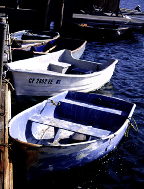

Destination Unknown. After descending the stairs, you come across these dingys just waiting for their owners to return and take them out for a spin. Some of the boats that are waiting at the docks have obviously been sitting there for awhile. One may be tempted to take them out themselves, if only to get a different view of the Wharf....The photograph was originally produced with late afternoon sun and a 35 mm camera using Provia slide film, shutter speed 250, F8. Photo copyright Andrea L. Arredondo, May 11, 2000.
Updated by Andrea Arredondo
5/19/00